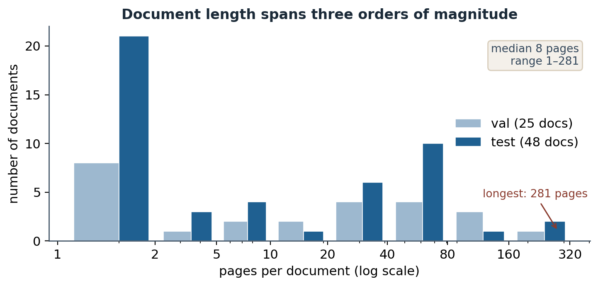
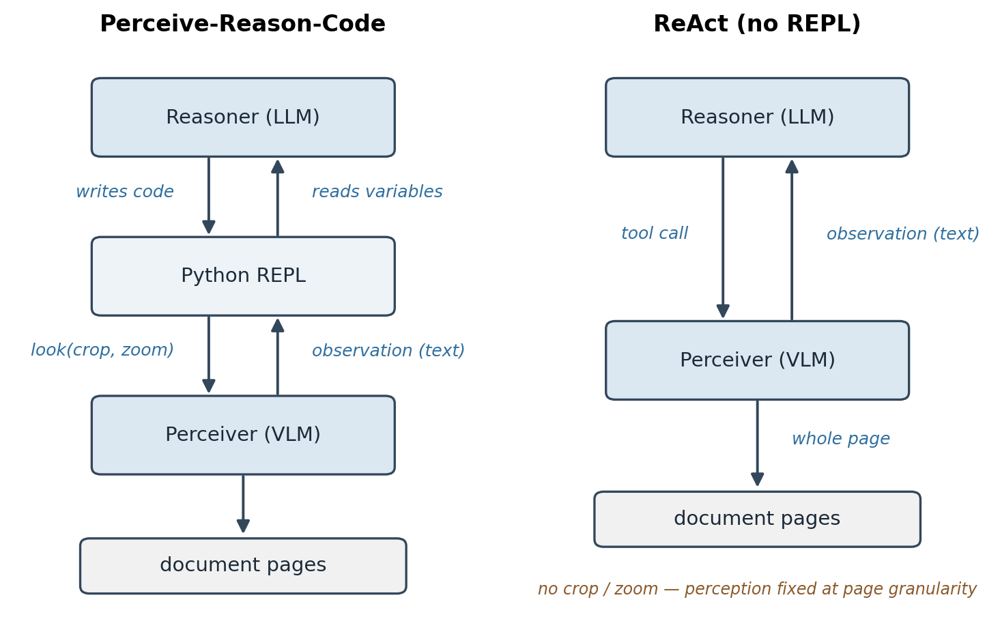
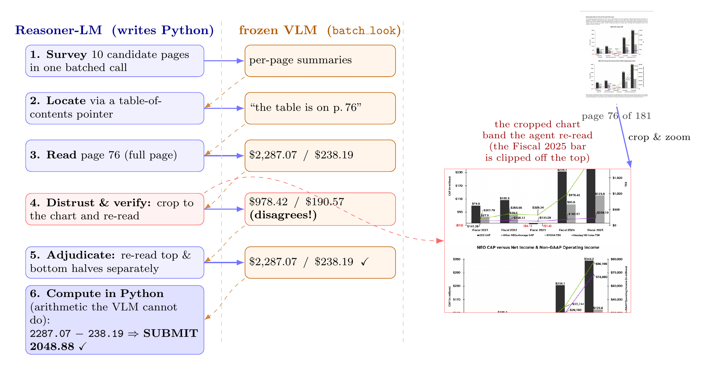
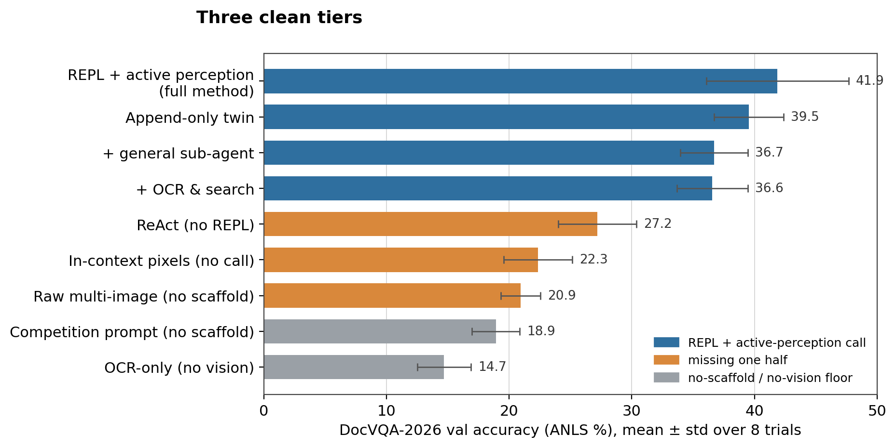
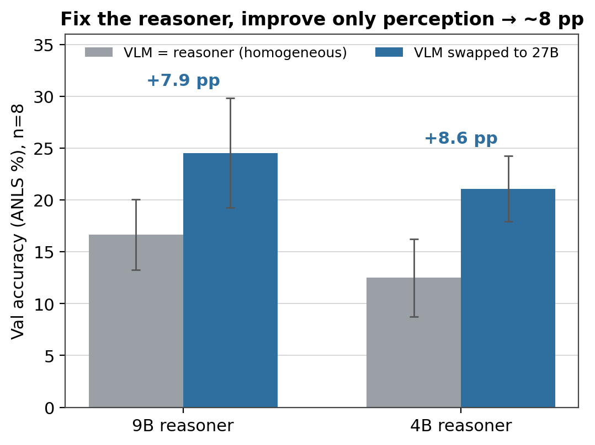
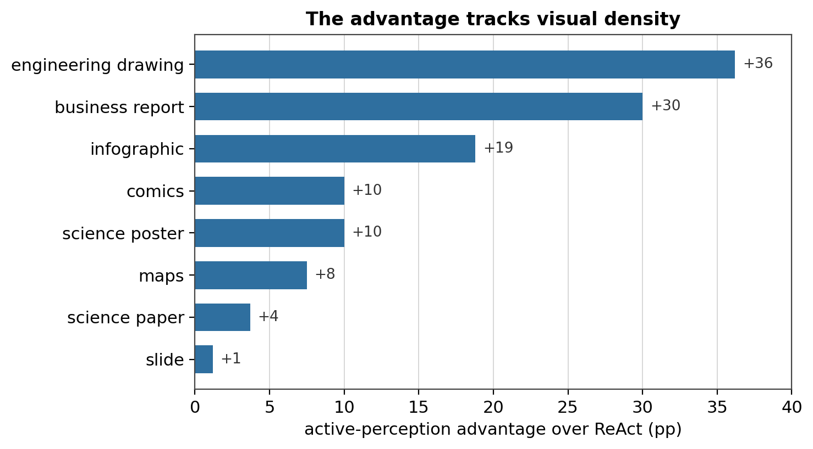
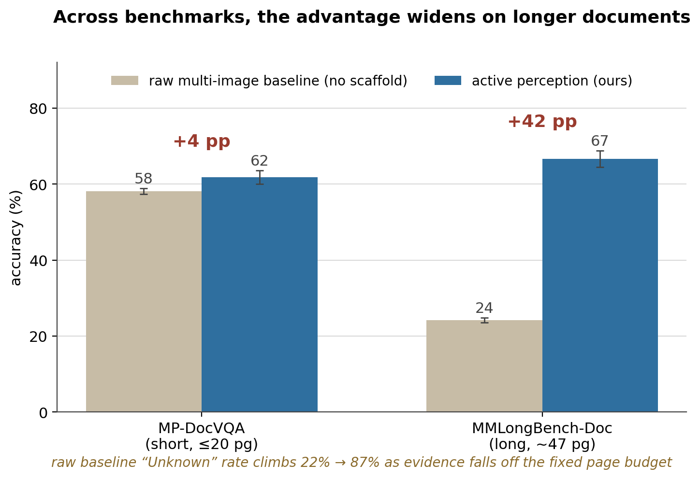

Perceive-Reason-Code: Active Perception for Document VQA
Code: github.com/bdsaglam/docvqa
TL;DR
We jointly won the ICDAR 2026 DocVQA challenge in the 8–35B tier. An open Qwen 3.5 27B beat the challenge’s bare-model baselines, Gemini 3 Pro and GPT-5.2, on the held-out test set, with no fine-tuning. Our approach is a Python REPL plus a single perception tool: a vision model the reasoner points at any region of any page. So it decides where to look, instead of reading whole pages at a fixed resolution. Two parts carry the accuracy, and only together: the REPL and the perception call. The usual additions do nothing for accuracy. That includes a general sub-agent, clever trajectory management, and the OCR and search our competition entry used. Perception is the constraint: a dense page defeats a single fixed-resolution look, whoever is looking. But the reasoner is the lever. Scaling the reasoner moves accuracy about twice as much as scaling the VLM it looks through, and a strong coding reasoner driving a small VLM beats a small reasoner driving a strong one. The approach builds on RLM, CodeAct, and the code-as-vision line. What this post adds is putting them together for documents and pinning down which parts carry the result.
A 27B model, a Python REPL, and one question
We entered the ICDAR 2026 DocVQA challenge with an approach: let a code-capable model direct its own perception from inside a Python REPL. The model we plugged into it was an open Qwen 3.5 27B. At its core the system is two things: the REPL, and an on-demand call to a vision-language model (VLM), used as a perception tool the reasoner invokes region by region.
The leaderboard result is a single number; the sharper question is where the lift comes from. A code harness helps a model; what’s less clear is which of its pieces (the REPL, the VLM tool, the agent loop) is actually carrying the result. So this post takes the thing apart, one piece at a time: which components carry the lift, and which are just along for the ride?
The core that does the work turns out to be small: the Python REPL and the on-demand perception call, and only the two together. The rest (a general sub-agent, clever trajectory management, an OCR pipeline) barely moves accuracy. And underneath sits a reframe for anyone building multimodal agents: on documents, perception is the constraint, but the reasoner is the lever. No model can afford to see a dense page all at once; what separates systems is how well the reasoner directing the looks spends its limited budget of them.
The result
The challenge scores one submitted answer per question on a held-out test set. We compute each of ours by self-consistency voting over a handful of samples. Two of the entries below are ours: an entry tuned to this benchmark, and the streamlined general method this post describes. Both clear the challenge’s official baselines. Those baselines are bare models, reported with no agentic scaffold, so the fair reading is a harnessed 27B against unharnessed frontier models.
| System (held-out test set) | Score |
|---|---|
| Qwen 3.5 27B (ours), tuned entry | 43.8% |
| Qwen 3.5 27B (ours), general method | 39.4% |
| Gemini 3 Pro | 37.5% |
| GPT-5.2 | 35.0% |
| Gemini 3 Flash | 33.8% |
| GPT-5 Mini | 22.5% |
The tuned entry scored higher because it was fitted to this benchmark: DocVQA-specific prompts, plus the OCR and search we spend the post stripping away. The general method drops all of that and still clears the frontier. Specializing buys a few points of peak score; generalizing gives them up. This post is about the general one.
These test numbers sit below our validation numbers. The gap could be a harder test split as much as any fit to the set we developed against; the general method strips most of the benchmark-specific prompting, so we don’t read it as mostly overfitting. We don’t claim the validation figures transfer untouched to test.
Either way, the takeaway isn’t the leaderboard position. It’s how the score was reached. A lot of strong document-VQA systems get there by fine-tuning on tens of thousands of question-answer pairs, or by building a specialized OCR-and-encoder pipeline. The general method needs neither. The model is stock Qwen 3.5 27B, and the system is a REPL and one perception call.
On this task, harness design substituted for fine-tuning. Before you reach for training data or a specialized pipeline, see how far a general model gets when you let it direct its own perception.
So what makes this task hard enough to need a system like that?
The task, and why it’s hard
Document visual question answering (Mathew et al., 2021) is what it sounds like: you’re handed a document and a question in plain language, and you have to answer it. The catch is what counts as a “document.” In the ICDAR 2026 DocVQA challenge a single item might be a one-page infographic or a 281-page annual report, and the answer might be a value in a merged table cell, a label on an engineering drawing, a figure on a crowded chart, a date in a form, or something you only get by reading two pages and doing arithmetic.
So before any reasoning happens, there’s a finding problem, and it runs along two axes at once. Across pages: the evidence lives on one of up to 281, so you have to find the right page first. Within a page: the page itself can be large (thousands of pixels on a side) and dense (a crowd of labels, cells, and lines), so the answer occupies a tiny fraction of it, well below what a single fixed-resolution read can resolve. Locate the page, then the region on it, then read, often compositing or computing over what you found. That’s the part general-purpose VLMs struggle with: hand one all the pages at once and it reads each at a fixed resolution with a fixed slice of attention. On a sparse page that’s fine. On a large, dense one it isn’t.
The scale of the finding problem is easy to miss. Across the challenge, documents run from a single page to 281, with a median of 8. Most are short. A long tail is not.

Figure 1. Document length across the DocVQA-2026 validation and test sets.
That gap, between what’s on the page and what a single read can resolve, is the whole game. The question is what to do about it. The obvious moves are to use a bigger model or to stuff more pages into the context window. The move that actually worked was to let the model decide where to look.
The recipe
Picture how a person answers a question from a hundred-page report. They do not read every page at a uniform squint. They flip to the section that matters, lean in on the one figure or table the question turns on, re-read a caption when a number looks wrong, and do the arithmetic on a notepad. It holds even on a single sheet: hand someone a large, dense map and they still work it region by region, finding the legend, then the area they need, then the labels there, never in one glance. Attention goes where the evidence is, a piece at a time. Active perception gives a model the same habit.
The whole method fits in one sentence. Give a code-capable model a persistent Python REPL and a single perception primitive (an on-demand call to a VLM, pointed at any region of any page), and let it direct perception instead of swallowing the document whole. It can crop to the evidence, zoom for acuity, sweep pages in a loop, composite regions, and do in code the coordinate math and arithmetic a VLM is bad at. Perception becomes something the model spends deliberately, a region at a time, rather than a single fixed gulp of pixels. Three moves give the system its name, Perceive-Reason-Code: perceive through a VLM call, reason in language, act by writing code. Unless noted otherwise, every experiment below uses Qwen 3.5 27B as both the reasoner and the VLM, on the DocVQA-2026 validation set (25 documents, 80 questions), eight trials, scored by ANLS (the fuzzy string-match metric DocVQA uses), reported as mean ± std.

Figure 2. Left: the active-perception loop. The reasoner writes code, the code calls the VLM on a chosen crop, and the returned text flows back into the REPL as the next observation. Right: a ReAct agent (Yao et al., 2023): the same VLM through plain tool calls, no code environment, so it reads only whole pages with no way to crop, compose, or compute.
Concretely, the loop is the familiar agent shape: a state (a representation of the run so far), an action (a block of Python the model writes), and an observation (whatever that code prints, including the text a perception call returns). Hold onto that framing; how the state is represented matters later, in a way that doesn’t affect accuracy at all.
Here is one run of the loop on a real question: the gap between two values on a chart buried in a 181-page report.

Figure 3. One run of the loop (16 iterations, correct). It surveys ten candidate pages in one batched call, locates the table via a table-of-contents pointer, reads a page whole and distrusts the number it gets, crops to the chart band and re-reads, then does the subtraction in Python, where it’s exact.
The actions are Python the model writes, and the arithmetic happens where it’s exact rather than in the VLM’s head. The whole-page read returned $978.42, and it was wrong. The crop caught it.
One setup detail: these runs disable the model’s native “thinking” channel.1 This relocates the reasoning into the visible body of each turn, where the code and the comments are. The reasoning is still there; thinking-off just moves it somewhere we can see it.
Ablations
The harness has a few moving parts: a Python REPL, a VLM that the agent calls as a perception tool, and the loop that ties them together. Which of those is doing the work? The clean way to find out is to remove one part at a time and watch the score move. Every run keeps the same answer-formatting rules; only the structure changes.
Two configurations run the full loop, and they need names. The one our entry ran, and the one every headline number in this post reports, is RLM: a direct instance of the Recursive Language Models scaffold, conditioning on a compacted state (a sliding window of recent REPL steps). Its twin, CodeAct, runs the same loop but conditions on the full transcript of every turn. Both do active perception; they differ only in how they represent the trajectory, a difference one ablation below treats on its own. ReAct keeps the same VLM perception tool but no REPL.
Before the knockouts, here are the main configurations, one per row. avg@1 is the headline single-trial accuracy (mean ± std over eight trials); the last two columns are two diagnostics behind it, pass@8 (coverage, whether any of the eight trials is correct) and SC@8 (the self-consistency vote we actually submit).
| Configuration | avg@1 (± std) | pass@8 | SC@8 |
|---|---|---|---|
| RLM (full method) | 41.9 ± 5.8 | 68.8 | 47.5 |
| + general sub-agent | 36.7 ± 2.8 | 66.3 | 41.3 |
| + OCR & search | 36.6 ± 2.9 | 67.5 | 40.0 |
| CodeAct | 39.5 ± 2.8 | 63.8 | 45.0 |
| ReAct (no REPL) | 27.2 ± 3.2 | 53.8 | 32.5 |
| Raw multi-image (no scaffold) | 20.9 ± 1.6 | 27.5 | 20.0 |
| Competition prompt (no scaffold) | 18.9 ± 1.9 | 33.8 | 21.3 |
| OCR-only (no vision) | 14.7 ± 2.2 | 27.5 | 15.0 |
Those two diagnostic columns say more than the headline mean. Self-consistency (SC@8) buys a few points over a single trial, which is why our test submissions vote. And pass@8 sits far above single-trial accuracy on the strong scaffolds: 68.8 against an avg@1 of 41.9, and 63.8 against 39.5 for CodeAct. Coverage that high says the scaffold’s sampling explores a diverse enough solution space to reach the answer far more often than it reliably produces it. (pass@8 is also the upper bound for any way of picking among the eight; SC@8 is one realizable pick, and it recovers only part of the gap.) We return to that gap at the end.
Now the mechanism, one part at a time. Start at the top and take away the REPL. What’s left is a ReAct agent: the same VLM perception tool, but called through plain tool-use instead of from inside a code environment. The score falls from 41.9% to 27.2%, about fifteen points. Without a REPL the agent can’t crop a region by arithmetic, can’t tile a page, can’t subtract two numbers it just read; it asks for whole pages and stops early (around five steps per question). The REPL isn’t a convenience. It’s the thing that lets reasoning turn into targeted perception.
Now do the opposite: keep the REPL, take away the perception call. Give the agent a display() that loads the page pixels straight into its own context, so it looks at the document itself instead of asking a focused VLM call to look and report back. This is DeepEyes’ perception channel driven from a REPL: the model inspects its own crops in-context, except that DeepEyes trains the habit with RL and here it is prompted. It collapses too, down to 22.3%. The agent also thrashes: it runs 30+ steps per question and pins the iteration cap on most of them, grinding without converging.
That second result is exactly what the RLM line would predict. Stuffing raw content into the reasoner’s own context degrades it (the familiar context-rot effect, where a model handles a long or noisy context worse than a clean one), whereas a focused sub-call that returns compact text keeps the context clean. RLM tells this story for long text; here it shows up for pixels, and it’s what pins down which half does the work. Having a REPL isn’t enough on its own; the perception has to go through a call that returns text, not be poured into the reasoner’s own window. (DeepEyes shows the in-context-crops channel can work when a model is trained for it; the point here is only that a prompted REPL agent is better off not.)
Put the two knockouts together and you get a clean 2×2:
| with sub-VLM | without sub-VLM (pixels in-context) | |
|---|---|---|
| with REPL | 41.9% (full method) | 22.3% (display() only) |
| without REPL | 27.2% (ReAct) | 20.9% (raw multi-image, no scaffold) |
You need both halves; neither alone gets you far. Drop either and you land in the low-to-mid 20s, near the no-scaffold baseline. The lift lives in the combination: a code REPL and an on-demand VLM perception call.
Plotted together, the configurations fall into three tiers whose gaps dwarf the spread within each.

Figure 4. Validation accuracy (avg@1 ± std, eight trials each) for every configuration, colored by tier: REPL + active perception, missing one half (no REPL or no perception call), and the no-scaffold / OCR-only floor.
Three things that turn out not to matter
The core is small, and the obvious ways to enrich it don’t make it any bigger. This is what tells you what you don’t need to build.
Generalizing the call buys nothing. We replaced the focused “look at this region” call with a general sub-agent that could take on any subtask (image optional). Accuracy didn’t move: 36.7%, inside the noise of the full method. And when we logged what the agent actually asked the sub-call to do, about 99% of the calls were still plain perception. One focused perception primitive already captures the benefit; the extra generality just sits there. (We use one level of perception call throughout; we never tried stacking them deeper.)
The trajectory format doesn’t matter, for inference. RLM conditions on a compacted representation of the run: a sliding window of its recent REPL steps, not every turn in full. CodeAct keeps the full trajectory instead, never compacting, a fully-observable log of every turn. The two tie: 39.5% vs 41.9%, within a couple of points, and CodeAct doesn’t even lose ground on longer documents (the per-document gap is uncorrelated with page count). For getting the answer, how you represent the trajectory is a wash.
It does, though, matter for something else: training. If you ever want to train the agent (with reinforcement learning, or by distilling a stronger one), the methods assume the model’s output grows as a clean prefix. Turn t is just turn t−1 with more appended. Compaction breaks that: it rewrites the history between turns, so the sequence is no longer a growing prefix. The full trajectory keeps it, which makes it the more trainable of the two. And, as we just saw, choosing it costs nothing in accuracy. (Making compacted trajectories trainable anyway is its own open problem; FoldAct (Shao et al., 2025) is an early attempt.) We’ll come back to this at the end.
Our OCR pipeline adds nothing on top here. The pipeline is docling for layout-aware page text, IBM granite-vision (a 2B vision-language model) for captioning the embedded figures and charts, and a BM25 index for lexical search. Wire all three into the full method and the score is 36.6%, flat, within the noise. On these moderate-length documents, that text adds nothing the active-perception call isn’t already getting from the pixels. One caveat on scope: this is the pipeline we ran, not a verdict on OCR in general. A stronger OCR engine, better matched to these layouts, might surface detail ours missed and lift accuracy, not just efficiency. What we can say is that the one we used didn’t beat looking.
So the core that matters is small: a REPL plus one active-perception call. Generality, trajectory format, and OCR-on-top are all dispensable.
That leaves one more knockout, the one that says what kind of problem this is.
Perception is load-bearing
Swap the eyes for a text channel. Give the same REPL agent our OCR text for every page plus a search tool, and no vision at all. It falls to 14.7%, the lowest score in the study, below even the no-scaffold competition prompt. On layout-bound categories (engineering drawings, maps) it scores zero out of ten in all eight trials. For these questions, OCR text cannot stand in for looking. Perception is not optional; it is the thing the scaffold is buying.
Better eyes, or a better director?
The knockouts pin the scaffold’s contribution to perception: swap whole-page ReAct for RLM with the same 27B on both sides, and accuracy jumps from 27 to 42, with nothing changing but how perception is spent. To see where the remaining headroom lives, we vary each half in turn.
Start by holding the reasoner fixed and upgrading only the eyes: feed its perception calls to a stronger VLM, up to the 27B. The reasoner never changes; only the quality of what it can see does. Accuracy climbs six to nine points at every reasoner size: +6.9 with a 4B reasoner, +6.4 with a 9B, +9.1 with the 27B, all well outside the noise.2 Better eyes help. Perception is a real constraint, even with reasoning held fixed.

Figure 5. Holding each reasoner fixed (4B, 9B, 27B) and upgrading only the VLM behind the perception call to the 27B. Bar labels give the smaller VLM’s size.
Now do the opposite: hold the VLM at the 27B backend and vary the reasoner. The reasoner is the bigger lever, but only inside the loop.
| Reasoner | RLM | ReAct |
|---|---|---|
| 4B | 21.1 | 18.1 |
| 9B | 25.3 | 22.7 |
| 27B | 41.9 | 27.2 |
Going from a 9B reasoner to a 27B one adds +16.6pp in RLM but only +4.5pp in ReAct: the same extra reasoning capacity is worth three to four times as much when the model has an actuator to spend it through. A whole-page reader can think harder about a page it still cannot resolve, but its ceiling is whatever one downsampled look yields, and a smarter reasoner cannot aim it. Give that reasoner a perception tool and its capacity turns into accuracy: it writes tighter crops, cleaner code, and decides where to look again.
Now put the two mixed corners side by side. A 4B reasoner given the 27B VLM reaches 21.1. A 27B reasoner peering through the 4B VLM reaches 32.8.3 The strong director with weak eyes wins by almost twelve points, and it even clears the ReAct agent that has the full 27B as its eyes (27.2). Between a stronger VLM and a stronger director, buy the director.
If perception is the bottleneck, the advantage should be largest where a page packs the most fine detail, and it broadly is.4 The per-category gap between the RLM agent and the ReAct baseline tracks visual density, though with few questions per category the ranking matters more than the exact points:

Figure 6. RLM’s advantage over ReAct (ANLS points), by document category: engineering drawings +36, business reports +30, infographics +19, science papers +4, slides +1. Maps are a hard case for every configuration.
So is the bottleneck perception or reasoning? Perception is what binds in the moment: a dense page defeats any single look, whoever is looking, and the OCR-only collapse shows nothing substitutes for looking. But the leverage sits with the reasoner. At a fixed 27B VLM, scaling the reasoner buys +20.8 points; at a fixed 27B reasoner, scaling the VLM buys +9.1. And that leverage only exists inside the loop: the same capacity buys three to four times more when the reasoner can act on perception than when it reads whole pages. The practical corollary is the one the corners show. The VLM does not have to be great. A decent but limited one, driven by a capable coding reasoner that can crop, zoom, and re-read on demand, does far more than the same VLM read in a single pass, and more than a stronger VLM aimed by a weaker director.
One caveat bounds the reasoning half of this. The data does not separate how much of a stronger reasoner’s lift comes from sharper aiming (better crops and code) versus sharper reasoning over what it then sees. That decomposition stays open.
The lift generalizes across model sizes and families
Our entry used Qwen 3.5 27B, but nothing in the recipe is specific to it. To check, we run the harness homogeneously (the same model as both reasoner and VLM) across sizes and across a second family.
| Model | ReAct | RLM | CodeAct |
|---|---|---|---|
| Qwen 3.5 4B | 13.4 | 14.2 | 16.3 |
| Qwen 3.5 9B | 16.3 | 18.9 | 23.0 |
| Qwen 3.5 27B | 27.2 | 41.9 | 39.5 |
| Gemma 4 31B | 18.4 | 33.0 | 30.3 |
| Gemma 4 E4B | 6.1 | 7.3 | 7.8 |
The code-REPL harnesses (RLM and its CodeAct twin) beat the no-REPL ReAct agent at every capable size, and the margin scales with model capability: a point or two at 4B, about fifteen points at Qwen 27B and Gemma 31B. But the lift has a floor. Gemma 4B (E4B) sits below the capacity gate: no harness clears the no-scaffold baseline (around 6), because the model cannot write the code to drive the loop. The harness amplifies a capable model; it cannot rescue one that cannot code.
So the lift is a capacity gate, not a free lunch. It generalizes across sizes and across a second family, for any model that is a strong enough multimodal coder. Qwen 3.5 27B is simply the checkpoint we entered in the challenge. The recipe is about the harness, not the model.
The advantage grows with document length
Document length is an axis of its own, and across benchmarks it separates the methods cleanly once documents get long. To see it, run RLM and the raw multi-image baseline on two benchmarks of very different length: MP-DocVQA (short, at most 20 pages, mean 5.3, scored by ANLS; Tito et al., 2023) and MMLongBench-Doc (long, around 47 pages, scored by a Qwen judge; Ma et al., 2024). Both on stratified-random subsets, n=3, Qwen 3.5 27B.

Figure 7. RLM’s advantage over the raw multi-image baseline, across two benchmarks of very different length. Qwen 3.5 27B, n=3, mean ± std.
On the short benchmark the gap is about 4 points (61.8 against 58.1). On the long one it is about 42 (66.6 against 24.2). The baseline is the same raw multi-image configuration as in the ablations; nothing changed between the two benchmarks but the documents.
The mechanism is visible in how each method moves across the axis. RLM stays flat (62 to 67%), because it navigates the document regardless of length. The raw multi-image baseline degrades. Its “Unknown” rate (the questions where it cannot find the evidence) climbs from about 22% on short documents to about 87% on long ones, as the evidence falls off the end of a fixed page budget.
So length is one axis along which the advantage grows, and it dominates where documents are long, as evidence falls off a fixed page budget. On moderate collections like DocVQA-2026 the budget barely binds, because the pages fit; the large edge there comes from a different axis, within-page density.
Limitations
Everything good about this method (general model, no training, no domain pipeline) is bought with one currency: calls. Perception happens a region at a time, each region is a VLM call, and the calls are sequential because each one depends on what the last one returned. The full method averages around 13 steps per question; the in-context-pixels variant, which never converges, runs more than twice that and pins the cap.
| Configuration | Steps / question |
|---|---|
| RLM (ours) | ~13 |
| ReAct (no REPL) | ~5 |
| In-context pixels (no perception call) | ~30 (caps out on most questions) |
| Raw multi-image (no scaffold) | 1 |
So the method trades latency and token cost for accuracy and generality. On the heaviest documents it can run up against the model’s context limit outright, and the self-consistency voting behind our test submission multiplies the cost several times over. This isn’t a small caveat. It’s the reason you’d hesitate to put this exact configuration in front of a latency-sensitive user.
MADQA (Borchmann et al., 2026) shows how far this can run: an unconstrained recursive agent can be flexible and ruinously expensive. In their setting, such an agent burned on the order of 270M input tokens and several hundred dollars on a task it then lost to a far cheaper retrieval agent. Flexibility has a bill attached.
More steps mark a hard document, not a path to a better answer. Across questions, trajectory length is mildly negatively correlated with correctness. The lever is the quality of the perception loop, not its length; grinding longer is a symptom, not a fix.
The encouraging part is that we left the efficiency levers untouched. There’s clear room, we just didn’t need it to make the point:
- Cut calls with cheap retrieval. High-quality OCR run once as preprocessing, plus a searchable index, would let the agent jump to the right page instead of sweeping, fewer perception calls for the same evidence.
- Make each call cheaper. The reasoner and the VLM don’t have to be the same model. The cross-model runs price this trade: a 4B VLM behind the 27B reasoner keeps 32.8 of the 41.9, about three-quarters of the accuracy at a fraction of the per-call cost, and a document-specialized small VLM could close more of the gap.
And this reframes the OCR result from earlier. Our OCR pipeline bought ~0 accuracy on these documents, but run once as preprocessing it still buys efficiency: fewer and cheaper looks. That is the extension to keep, whether a stronger engine eventually answers better or ours just answers the same, faster.
Beyond cost, a few limits bound the claims. The test numbers sit below validation (a harder test split is at least as plausible a reason as fit to the development set). And the scaffold has a floor: it amplifies a capable coder but cannot rescue a model too weak to drive the loop, and it does not cleanly separate how much of a stronger reasoner’s lift is sharper aiming versus sharper reasoning. None of these moves the central picture.
Set the caveats aside for a moment, because the REPL is really an instance of a more general idea.
Code as a substrate for learning
Strip away the document-specific framing and here’s what the REPL really is: a symbolic substrate for a neural model. Code is the medium the model explores in, composes in, and computes in: a place to hold and manipulate things its own context can’t. Active perception is just one instance of it: the model writes code to aim its own eyes, and the code does the cropping and the arithmetic that the network is bad at. The neural part proposes; the symbolic part executes and remembers.
Using this substrate at inference is already common. Frontier models interleave code execution and tool calls with their reasoning, running Python or calling a tool between thinking steps; the results here add a document-domain instance, with the twist that the code aims a second model’s perception. The weights stay frozen, and the substrate wraps around them from the outside.
The open question is about learning. Everything above uses the substrate at deployment, bolted on as an external harness. What if it were part of the model itself, woven into how the model is trained rather than added afterward? Not a scaffold you remove, but a native faculty the model learns to use: to compose, to compute, to aim its own perception. Could a model learn in this symbolic substrate, not just borrow it at answer time? That is a sharper and more uncertain claim than “code helps agents,” and it is the one we keep coming back to.
Two things from this study make it feel concrete rather than idle. First, we already know which form is trainable: the append-only trajectory ties the compacted one on accuracy but keeps the clean, growing-prefix structure that learning methods assume. And making folded trajectories trainable is itself an active problem. Second, the coverage gap is just sitting there: for CodeAct, pass@8 is about 24 points above what a single trial reliably produces. The answer is already in reach; the model just does not land on it by default. That is not noise. It is exactly the kind of signal a learning procedure exists to capture.
Whether the symbolic substrate can be made part of the model during training (so that neural and symbolic computation are learned together rather than stitched together at inference) is genuinely open. We got these results by letting a frozen model write code to look more carefully. The thread worth pulling next is whether a model that learns to use that substrate, as part of itself, outgrows one that only borrows it at inference.
References
- Zhang, A. L., Kraska, T., & Khattab, O. (2025). Recursive Language Models. arXiv:2512.24601.
- Mayumu, N., et al. (2026). Recursive Vision-Language Models with Adaptive Depth (RVLM). arXiv:2603.24224.
- Wang, X., et al. (2024). Executable Code Actions Elicit Better LLM Agents (CodeAct). ICML. arXiv:2402.01030.
- Yao, S., et al. (2023). ReAct: Synergizing Reasoning and Acting in Language Models. ICLR. arXiv:2210.03629.
- Gupta, T., & Kembhavi, A. (2023). Visual Programming: Compositional Visual Reasoning Without Training (VisProg). CVPR. arXiv:2211.11559.
- Surís, D., Menon, S., & Vondrick, C. (2023). ViperGPT: Visual Inference via Python Execution for Reasoning. ICCV. arXiv:2303.08128.
- Zheng, Z., et al. (2025). DeepEyes: Incentivizing “Thinking with Images” via Reinforcement Learning. arXiv:2505.14362.
- Borchmann, Ł., et al. (2026). Strategic Navigation or Stochastic Search? How Agents and Humans Reason Over Document Collections (MADQA). arXiv:2603.12180.
- Shao, J., et al. (2025). FoldAct: Efficient and Stable Context Folding for Long-Horizon Search Agents. arXiv:2512.22733.
- Mathew, M., Karatzas, D., & Jawahar, C. V. (2021). DocVQA: A Dataset for VQA on Document Images. WACV. arXiv:2007.00398.
- Tito, R., Karatzas, D., & Valveny, E. (2023). Hierarchical Multimodal Transformers for Multi-Page DocVQA (MP-DocVQA). arXiv:2212.05935.
- Ma, Y., et al. (2024). MMLongBench-Doc: Benchmarking Long-context Document Understanding with Visualizations. arXiv:2407.01523.
Citation
If you found this useful:
Sağlam, B. D. (2026). Perceive-Reason-Code: Active Perception for Document VQA. https://barisdeniz.is-a.dev/posts/perceive-reason-code/
@misc{saglam2026prc,
author = {Sağlam, Barış Deniz},
title = {Perceive-Reason-Code: Active Perception for Document VQA},
year = {2026},
howpublished = {\url{https://barisdeniz.is-a.dev/posts/perceive-reason-code/}}
}Footnotes
We run with
enable_thinking=falsefor cost and reproducibility. Re-enabling it doesn’t change the picture (a separate ablation moves it less than the trial-to-trial noise).↩︎+6.88pp at 4B (Welch t = 3.91, 95% CI [+3.1, +10.7]) and +6.41pp at 9B (t = 3.21, 95% CI [+2.1, +10.7]), eight trials per arm; +9.07pp at 27B (t = 3.52, 95% CI [+3.3, +14.8]), four trials against eight.↩︎
32.81 ± 3.13 over four trials, against 21.09 ± 3.16 over eight. One asymmetry to note: the 4B- and 9B-reasoner cells run a minimally different prompt variant of the same solver (identical harness and tools); the 27B-reasoner cells run the exact configuration used everywhere else in the post.↩︎
Within-set, the “advantage grows with page count” hypothesis doesn’t hold: on the longest documents with a strong VLM the gap is flat. Across benchmarks of very different length, a budget effect does appear, which the document-length section takes up directly.↩︎